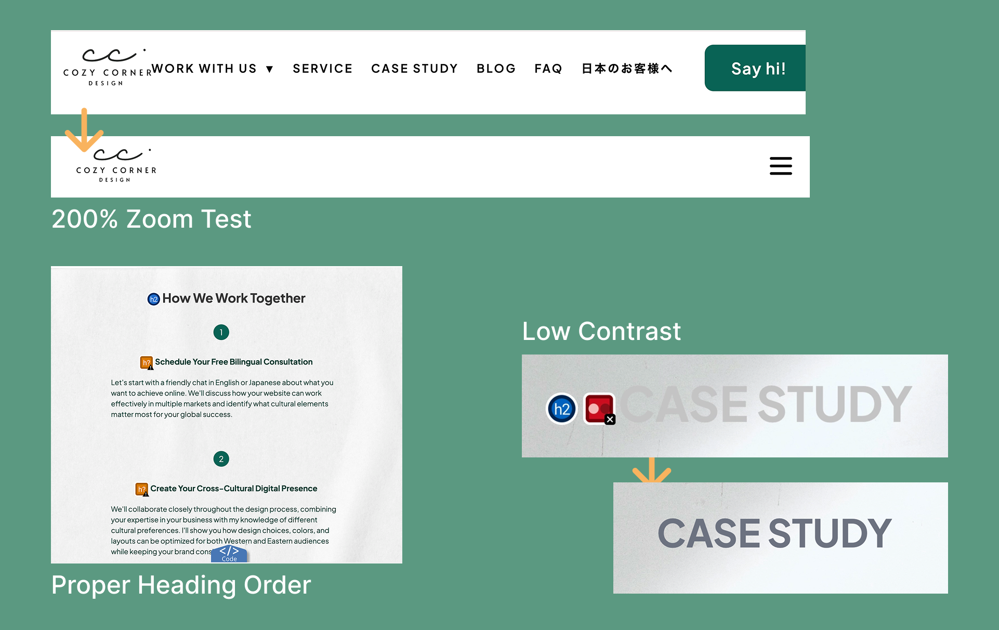

先月は、小さなビジネスにとってなぜアクセシビリティが大切なのか、そしてなぜ自分のウェブサイトをアクセシビリティの視点から見直し始めたのかについてお話ししました。
今月は、そこからもう少し踏み込んで、実際に自分のホームページをアクセシビリティの視点から見直してみました。
最初は、ツールを使って問題を見つけ、必要な修正をしていく、どちらかというと技術的な確認作業になると思っていました。
でも実際に進めていくうちに、この作業は単に「アクセシビリティチェックをすること」ではなく、「ユーザーが実際にどのようにサイトを体験しているのか」を理解していくプロセスなのだと感じるようになりました。
例えば：
• キーボードだけで操作するとどう感じるか
• 拡大表示したときに問題なく読めるか
• タッチ操作では使いやすいか
• 読み上げたときに自然に伝わるか

そんなふうに、普段とは異なる視点でサイトを確認していくことで、通常の操作だけでは気づきにくい問題が少しずつ見えてきました。
私のウェブサイト自体は、HTML・CSS・JavaScriptで作られた比較的シンプルなサイトです。そのため、WordPress、Squarespace、Wix、Shopify、Webflow などのサイト制作ツールを使っている場合とは、技術的な修正方法が異なる部分もあると思います。
ただ、その背景にある考え方——「読みやすさ」「使いやすさ」「分かりやすさ」、そして「さまざまな環境や使い方を想定して設計すること」——は、どんなサイトにも共通しているように感じています。
そして今回特に感じたのは、アクセシビリティは後から特別に追加するものというより、制作やデザインの段階から、さまざまな使い方を実際に試しながら、体験を丁寧に確認していくことが大切だということでした。
良かったら、ぜひ読んでみてくださいね。🪴
⚠️ ご参考までに:
本記事は、アクセシビリティやWCAGの視点で自身のウェブサイトの見直し内容をもとにしています。ご紹介している気づきや改善点は、サイトの目的やユーザーによって異なる場合がありますので、あくまでも参考としてご覧ください。
一度立ち止まって使ってみると見えてくること
ホームページの確認では、自動チェックツールと手動での確認を組み合わせながら進めていきました。
主に使用したのは：
• Google Chrome Lighthouse
• WAVE Evaluation Tool
これらのツールでは、コントラスト不足、タッチターゲットのサイズ、ラベルの問題、構造面の課題などを確認することができます。
ただ、使っていく中で感じたのは、ツールは「どこに問題があるか」は教えてくれても、「実際にどのように体験されるか」までは分からない、ということでした。
そこで今回は、普段とは違う方法で実際にサイトを使ってみることにしました。
• マウスを使わず、キーボードだけで操作してみる
• ブラウザを200%まで拡大してみる
• モバイルで細かく操作してみる
• 読み上げ機能（VoiceOver）で確認してみる
すると、今まで気づかなかった問題が少しずつ見えてきました。大きくサイトが壊れているわけではないけれど、キーボードだけでは操作しづらかったり、読み上げると少し不自然だったり、拡大するとレイアウトが崩れてしまったり。
実際に異なる方法で体験してみることで、初めて見えてくる課題がたくさんあったのです。
そして今回特に感じたのは、アクセシビリティの確認は単に技術的な問題を見つけることではなく、普段とは違う視点からサイトを体験することでもある、ということでした。
記録を始めたことで、課題が見えやすくなった
アクセシビリティの確認を進める中で、Notionを使って簡単なアクセシビリティ課題シートを作り、見つけた課題を記録していくことにしました。
最初は単純に、「忘れないようにするため」のメモに近いものでした。でも続けていくうちに、それ以上に大きな意味を持つようになっていきました。
記録していたのは例えば：
• 対象ページ
• 問題が起きている箇所
• 問題の種類
• 優先度や進捗
• 気づいたこと
• ユーザーへの影響
• 修正内容
• そこから学んだこと
さらに、後から振り返りやすいようにスクリーンショットも残していきました。
この記録作業で特に良かったのは、「すぐ修正する」のではなく、一度立ち止まって考える時間が生まれたことです。
• なぜこの操作が使いづらく感じるのか
• どんな状況でこの問題が起きるのか
• 誰に影響する可能性があるのか
• これは使いやすさや伝わり方にどう関係しているのか
そんなことを自然に考えるようになりました。そして気づいていったのは、アクセシビリティの問題は単独の技術的なミスというより、「体験」や「コミュニケーション」の問題につながっていることが多い、ということでした。
見直す中で、少しずつ変わっていったこと
⌨️ ナビゲーションは「見た目」だけではない
最初に気づいたことのひとつが、キーボードだけではドロップダウンメニューを開けなかったことでした。マウスでは普通に使えていたので、それまでまったく気づいていませんでした。
でも、ひとつ操作方法を変えただけで、重要なページにアクセスできなくなってしまったのです。
そのとき、ナビゲーションに対する見方が少し変わりました。ナビゲーションは単にリンクを整理することではなく、いろいろな方法でサイトを使う人が、安心して移動できるようにすることでもあるのだと強く感じました。
表面的には完成して見えていても、実際には小さな使いづらさが隠れていることがあるのだと感じました。
👀 「読みやすさ」は思っていた以上に体験に影響する
もうひとつ印象的だったのが、文字の読みやすさについてです。
一部のテキストカラーは、落ち着いた雰囲気や繊細さを出したくて、少し淡めにしていました。デザインとしては気に入っていたのですが、改めて見直してみると、少し読みづらい場所があることに気づきました。
極端に見えないわけではない。でも、少し疲れる。少し読み飛ばしたくなる。そんな小さな負荷が積み重なっていたように感じました。
この経験を通して、アクセシビリティは「特別な対応」というより、伝わりやすさそのものに関わっているのだと実感しました。内容を理解するために余計なエネルギーを使わなくて済むことは、安心感や読みやすさにもつながっていきます。
そして、「繊細な見た目」よりも、まず「伝わること」を大切にしたいと改めて感じました。
📱 モバイルでは、小さな違和感が大きくなる
モバイル確認では、ボタンや小さな操作要素にも気づきがありました。見た目としては問題なく見えていても、実際に指で操作すると押しづらい部分があったのです。
そこで気づいたのは、「見た目のサイズ」と「操作しやすさ」は必ずしも一致しない、ということでした。
小さくシンプルに見えるデザインでも、裏側でタップしやすい領域を広げることで、使いやすさは大きく変わります。アクセシビリティ改善というと、大きくデザインを変えるイメージを持っていましたが：
• タップ領域を少し広げる
• 余白を調整する
• 操作しやすい間隔にする
実際には見えない部分の小さな調整が、体験を大きく変えることもあるのだと感じました。
🌏 アクセシビリティは「言葉」にも表れる
今回の中で、特に印象に残った小さな修正のひとつが、モバイルメニューのラベルでした。
最初は、ハンバーガーメニューのボタンに 「Toggle navigation」 という aria-label を設定していました。
開発側から見ると、「ナビゲーションを開閉する」という意味としては正しい表現です。でも、アクセシビリティについて調べていく中で、音声操作を使うユーザーにとっては、少し違う見え方になることに気づきました。
例えば、Voice Control のような音声操作機能を使う場合、ユーザーは「メニューを開く」や「メニューをタップ」のように、実際に声に出して操作することがあります。そのとき、ボタンのラベルが「Toggle navigation」になっていると、ユーザーが自然に使う言葉と一致せず、うまく認識されない可能性があります。
そこで今回は、ラベルをシンプルに 「Menu」 に変更しました。
とても小さな修正ですが、この経験を通して、アクセシビリティは単に技術的な構造を整えることだけではなく、「人が自然に理解し、自然に使える言葉」を考えることでもあるのだと感じました。
これは、言語や文化をまたいで仕事をしている自分にとって、特に考えさせられる部分でもありました。
良いアクセシビリティと良いコミュニケーションは、深いところでつながっているのだと感じています。
🔍 レスポンシブデザインは画面サイズだけではない
もうひとつ印象的だったのが、200%拡大表示での確認です。通常表示では問題なかったナビゲーションが、拡大すると重なって崩れてしまいました。
そこで気づいたのは、レスポンシブデザインは単に画面サイズへの対応ではない、ということです。拡大表示、文字サイズ、表示領域の変化、読みやすさの必要性——そういった条件も含めて考える必要があります。
普段の環境では問題なく見えていても、見え方が変わるだけで使いづらくなることがあります。この確認以降、200%拡大テストは今後も意識的に取り入れていきたいと思うようになりました。
今回の見直しを通して感じていること
今回のアクセシビリティの見直しを通して強く感じたのは、アクセシビリティの課題は、普段の使い方だけでは見えにくいことが多い、ということです。
実際に、
• キーボードだけで操作してみる
• VoiceOverで読み上げを確認してみる
• 200%まで拡大してみる
• モバイルで細かく操作してみる
といった形で、普段とは違う方法でサイトを確認していく中で、初めて見えてきた問題がたくさんありました。
通常の操作では問題なく見えていたものでも、キーボードではアクセスできなかったり、読み上げると不自然だったり、拡大すると崩れてしまったり。実際に試してみることで、少しずつ課題が明確になり、改善につなげることができました。
そして今回特に感じたのは、アクセシビリティの監査は、単に問題を見つけるためだけではなく、「ユーザーがどう体験しているか」を理解するためのプロセスでもある、ということでした。
今回の経験を通して、アクセシビリティは特別なものというより、制作やデザインの段階から、さまざまな環境や使い方を実際に試しながら、ユーザー体験を丁寧に見直していくことなのだと感じています。
おわりに
アクセシビリティというと、最初は難しく、技術的なものに感じることもあります。
でも今回の経験を通して、実際に試してみること、そして一つひとつ問いかけながら体験を見直していくことが、とても大切なのだと感じました。
まだ学びの途中ではありますが、これからもアクセシビリティの見直しを通して見つけたことや改善の過程、そこから感じたことを少しずつ共有していけたらと思っています。
ここまで読んでいただき、ありがとうございました。🌱